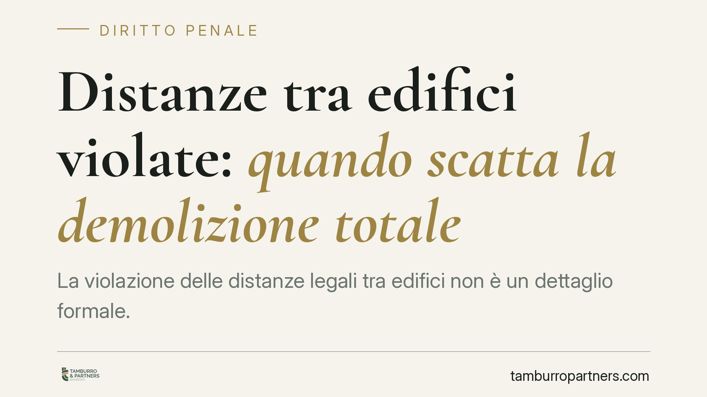

Distanze tra edifici violate: quando scatta la demolizione totale
La violazione delle distanze legali tra edifici non è un dettaglio formale. Quando il vizio è sostanziale e tocca la collocazione stessa del fabbricato, la giurisprudenza amministrativa esclude la "sanatoria economica" prevista dall'art. 38 del Testo unico edilizia e conferma la demolizione. Vediamo perché e cosa significa per proprietari, confinanti e acquirenti.

Il principio di fondo
Le distanze minime tra costruzioni non servono a soddisfare un adempimento burocratico. Rispondono a esigenze concrete: igiene, aerazione, illuminazione, sicurezza antincendio e tutela del vicino confinante. Chi costruisce troppo vicino al fabbricato altrui incide su beni che la legge protegge a prescindere dal consenso delle parti.
Per questo la giurisprudenza amministrativa distingue con nettezza tra due categorie di irregolarità edilizie, con conseguenze molto diverse.
Inquadramento normativo
L'art. 38 del d.P.R. 380/2001 disciplina gli interventi eseguiti in base a un permesso di costruire poi annullato. In alcuni casi consente al Comune, quando la rimozione dei vizi delle procedure amministrative non è possibile, di applicare una sanzione pecuniaria in luogo della demolizione. È la cosiddetta fiscalizzazione dell'abuso: si "paga" invece di abbattere.
Il punto decisivo è il perimetro di questa facoltà. L'Adunanza Plenaria del Consiglio di Stato, con la sentenza n. 17/2020, ha chiarito che la fiscalizzazione ha natura eccezionale e opera solo per i vizi formali o procedurali del titolo, cioè quelli che riguardano l'iter autorizzativo. Non copre i vizi sostanziali, quelli che attengono alla conformità dell'opera alle norme urbanistico-edilizie, tra cui rientra la violazione delle distanze.
La ragione è logica prima ancora che giuridica: un vizio sostanziale non si corregge sanando le carte, perché l'opera resta oggettivamente in contrasto con la disciplina. In questi casi la demolizione non è una scelta discrezionale dell'amministrazione, ma l'esito dovuto.
Il versante penale
La costruzione in violazione delle distanze può intrecciarsi con le contravvenzioni edilizie dell'art. 44 del d.P.R. 380/2001, articolate in diverse fattispecie a seconda della gravità (dalla mera inosservanza delle norme regolamentari fino alla lottizzazione abusiva).
Qui va distinta la demolizione amministrativa da quella penale. In sede penale, l'ordine di demolizione può essere disposto dal giudice ai sensi dell'art. 31, comma 9, d.P.R. 380/2001, richiamato in materia di sanzioni penali: si tratta di una misura con funzione ripristinatoria, non di una pena in senso stretto. Questo spiega perché l'ordine di demolizione penale non segue la prescrizione della contravvenzione: anche quando il reato edilizio si estingue per decorso del tempo, l'ordine impartito con la sentenza può conservare efficacia.
Il risultato pratico è che proprietario e tecnico possono trovarsi esposti su due fronti paralleli — amministrativo e penale — che non si neutralizzano a vicenda.
Implicazioni pratiche
Le conseguenze cambiano a seconda della posizione.
- Il proprietario che ha costruito confidando in un titolo poi annullato per vizio sostanziale non può contare sulla monetizzazione dell'abuso: il rischio concreto è la demolizione, con i relativi costi e la perdita del valore immobiliare.
- Il confinante leso dispone di tutele specifiche. Oltre alla segnalazione all'amministrazione, può agire in sede civile per far valere la violazione delle distanze previste dall'art. 873 c.c. e dalle norme locali, chiedendo riduzione in pristino e risarcimento.
- L'acquirente è il soggetto più esposto all'errore. Comprare un immobile con distanze non conformi significa acquistare un contenzioso potenziale e un bene aggredibile da ordini di demolizione già in essere o futuri.
Cosa fare in concreto
- Effettuate una due diligence tecnico-giuridica prima di acquistare o avviare un intervento: non fermatevi al titolo edilizio, verificate la conformità effettiva dell'opera.
- Richiedete l'accesso agli atti presso il Comune per ricostruire la storia autorizzativa del fabbricato ed eventuali annullamenti, ricorsi o ordinanze pendenti.
- Commissionate rilievi tecnici a un professionista abilitato per misurare le distanze reali rispetto ai fabbricati vicini e ai confini, confrontandole con la disciplina locale e con l'art. 873 c.c.
- Verificate l'eventuale pendenza di procedimenti penali o di ordini di demolizione, che possono sopravvivere all'estinzione del reato.
- Distinguete da subito la natura del vizio: formale o sostanziale. Da questa qualificazione dipende l'intera strategia difensiva o negoziale.
Una valutazione corretta nasce dall'analisi del singolo caso, degli atti amministrativi e dei titoli. Consigliamo di muoversi prima dell'operazione immobiliare, non dopo l'ordinanza di demolizione.
Contributo informativo a cura di Tamburro & Partners - Avv. Giuseppe Tamburro. Non costituisce parere legale.
Ogni condominio ha una storia a sé.
Se gestisci un'amministrazione e vuoi un confronto su una specifica questione condominiale, scrivi allo studio. Ti rispondiamo entro un giorno lavorativo.